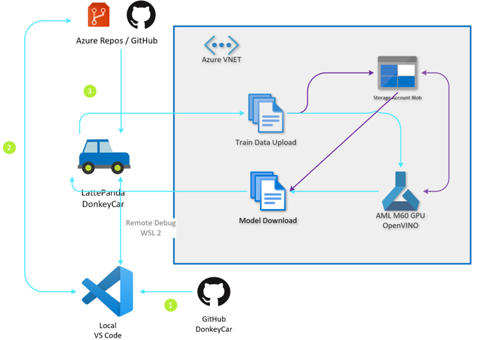
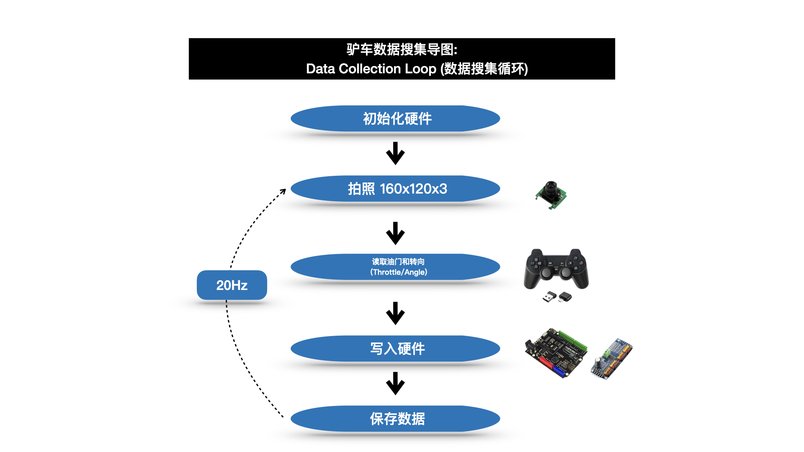
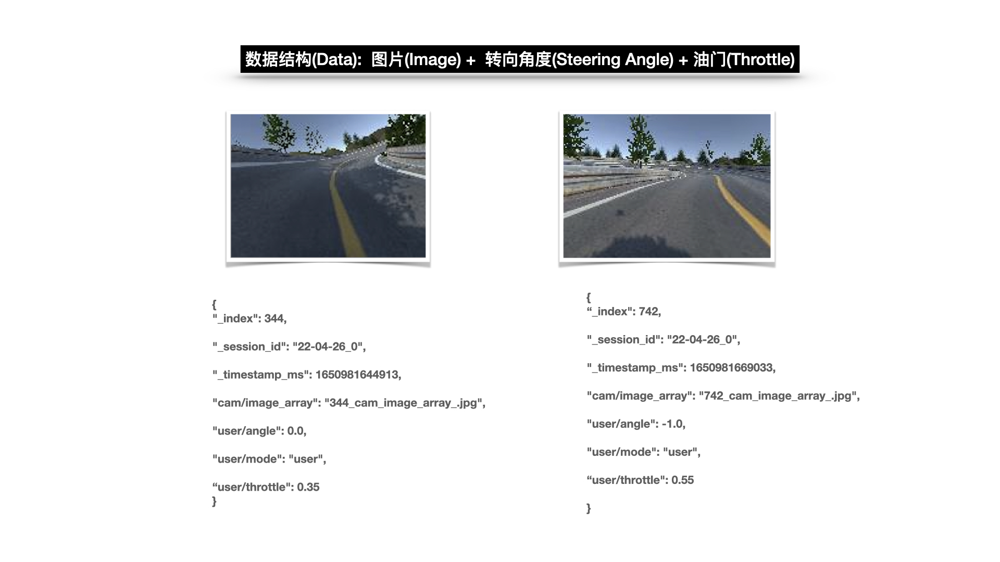
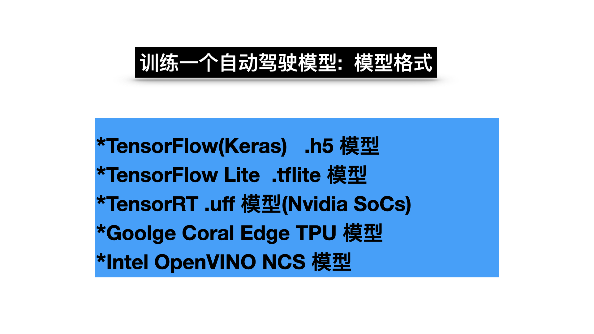
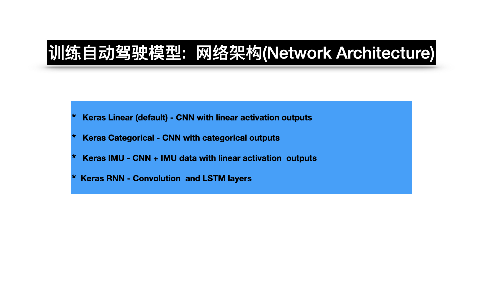

软件架构
核心架构体系
驴车的整体架构是通过在 Linux 系统(目前是 Ubuntu 20.04 LTS版本)上构建，通过本地 Python 环境及LattePanda, OpenCV, Tensorflow, Keras, OpenVINO, Arduino，以及云端Azure Machine Learning, Azure DevOps等云服务整合而成。

学习资源
操作系统
- OS版本: Ubuntu 20.04 LTS
- 下载链接: Ubuntu 20.04 LTS Desktop
Python解释器
- 版本: python3.7
- 下载链接: python3.7
OpenCV视觉框架
- 版本: 4.5.5.60 (根据实际平台选择安装版本)
- 下载链接: OpenCV
驴车代码解析
软件框架
主程序循环架构

数据结构

模型格式

网络架构
